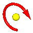

Angled Plane command
Use the Angled Plane command  to create a reference plane at a specified angle to a part face or reference plane.
This command is only available in the Ordered environment.
to create a reference plane at a specified angle to a part face or reference plane.
This command is only available in the Ordered environment.
Create an angled plane based on a part face
Select a planar part face and then select an edge on the planar part face to use as the rotation axis. Define the orientation point on the rotation axis. Dynamically drag the angled plane to define the rotation angle or type a rotation angle on the Angled Plane command bar.
Create an angled plane based on a reference plane
Select a reference plane and then select either another reference plane or a planar part face. A torus arrow displays denoting the rotation axis at the intersection of the selected reference plane and the selected face or reference plane. Dynamically drag the angled plane to define the rotation angle or type a rotation angle on the Angled Plane command bar.

To create an angled reference plane in the Synchronous environment, use the Coincident Plane command. Select a reference plane or planar face. Use the steering wheel to rotate the coincident plane at the desired angle.
How do I
Create a coincident reference planeCreate a Coincident Reference Plane (ordered)
Create a coincident reference plane by axis (ordered modeling)
Create a reference plane by 3 points
Create a reference plane by 3 points (ordered)
Create a reference plane normal to a curve
Create a reference plane normal to a curve (ordered)
Create a tangent reference plane (synchronous)
Create a tangent reference plane (ordered)
Create a parallel reference plane
Create an angled reference plane
Create a perpendicular reference plane
Resize a reference plane
Change reference plane name display
Learn more
Working with reference planesReference planes in assemblies
Examples: Defining reference plane orientation (ordered)
Look up more details
Coincident Plane command (ordered)Coincident Plane command (synchronous)
Coincident Plane command bar
By 3 Points command
By 3 Points command bar
Normal to Curve command
Normal to Curve command bar
Tangent Plane command
Tangent Plane command bar
Parallel Plane command
Parallel Plane command bar
Angled Plane command bar
Coincident Plane By Axis command
Coincident Plane By Axis command bar
Perpendicular Plane command
Perpendicular Plane command bar
Create Reference Plane command bar
Edit Reference Plane command bar
Reference plane command bar
Reference Plane Selection command bar
Resize Plane command
Resize Plane command bar
Show All Reference Planes command
Hide All Reference Planes command